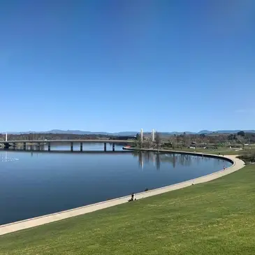
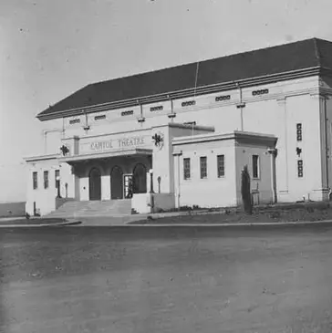
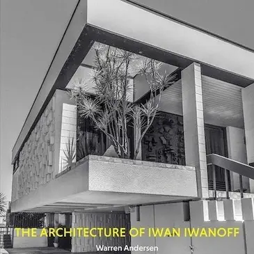

Events
- Craft & Design Festival
- Canberra Region Heritage Festival.
Including Tours, Exhibitions, Talks & Lectures
Upcoming Events
Craft & Design Festival

- Canberra Modern Guided Bus Tour – Explore the Design & engineering & Infrastructure Highlights of the National Capital: Bridges, Dams, Lake Burley Griffin
- 2 November, 10:00am – 1pm
- Purpose: Reveal the often overlooked planning and engineering shaping the city
Craft & Design Festival

- Free Exhibit: Architecture Spectres Canberra 15–26 April26
- 2A Mugga Way, Red Hill
- Monday–Friday, 10am–4pm
- Explores Canberra's 20th-century architectural history by research
- Features mixed media
- Highlights lost buildings and ones at-risk of loss.
Canberra Region Heritage Festival

- Talk & book launch – The Architecture of Iwan Iwanoff (1950–1986)
- Sunday 4 November, 3:30pm–5:00pm
- Author: Warren Andersen - focus Iwanoff's design legacy and influence
Canberra Region Heritage Festival
- Tours of Manning Clark House designed by Robin Boyd
- 13 - 21 April 2024
- 11am & 2pm
- 17 Tasmania Circle, Forrest
- Includes access to the study where History of Australia was written
- Light morning/afternoon tea included. Cost $10 / person